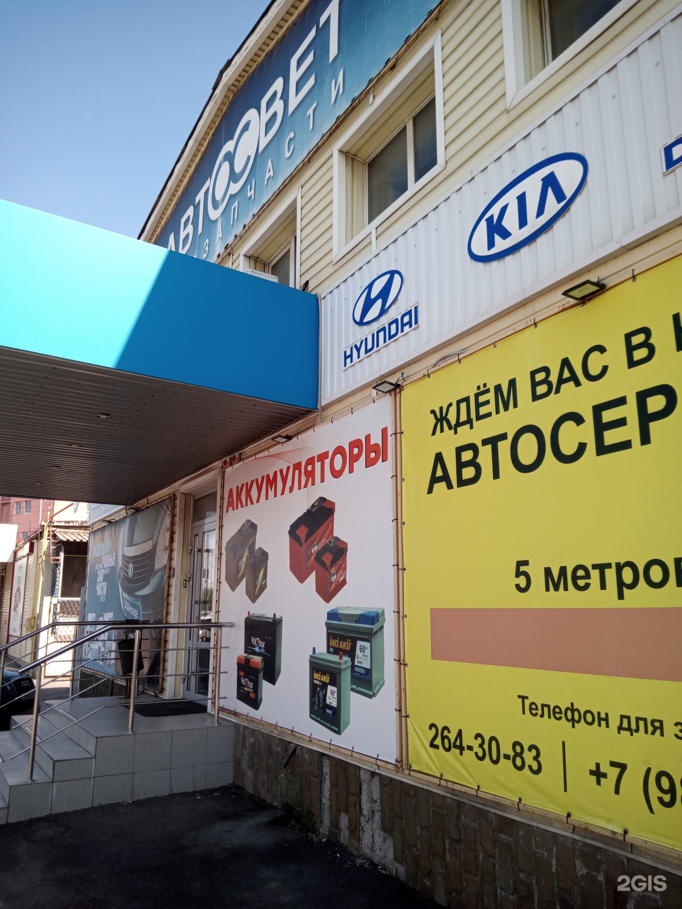

Отличный сервис, приняли без записи, срочно нужно было поменять колодки перед дальней дорогой. Отдельная благодарность, механику Алексею, все чётко, быстро, с умом. Приветливый и грамотный сотрудник. Всем советую.
Пн–Пт 9:00–20:00, Сб 9:00–19:00, Вс 9:00–18:00
Автосервис и запчасти в Кировском районе
Ремонт ходовой и двигателей, развал-схождение, шиномонтаж. Запчасти и аккумуляторы в магазине при сервисе — подберём и поставим.
4.8рейтинг на 2ГИС
79 марокремонтируем
7 днейв неделю, с 9:00

Услуги
Ремонт ходовой части
по осмотруРазвал-схождение
по осмотруШиномонтажРемонт порезов, правка и прокатка дисков, возможна запись
по осмотруРемонт бензиновых двигателей
по осмотруРемонт дизельных двигателей
по осмотруРемонт стартеров и генераторов
по осмотруРемонт выхлопных системВ том числе тюнинг выхлопной системы
по осмотруАвтомобильные аккумуляторы
по запросуЗапчасти для иномарок и отечественных авто
по запросуАвтохимия и автомасла
по запросуСтоимость скажем после осмотра автомобиля.
Почему к нам
01
Сервис и магазин рядом
Запчасти в наличии, редкие детали привозят под заказ — не нужно искать самому.
02
Любые марки
Ремонтируем 79 марок: от Lada и УАЗ до Toyota, BMW и Mercedes-Benz.
03
Без выходных
Пн–Пт до 20:00, в субботу до 19:00, в воскресенье до 18:00.
04
Удобно ждать
Wi-Fi для клиентов. Оплата картой, наличными, через банк или по QR-коду.
Отзывы
Отличный сервис и магазин с большим выбором запчастей в наличии. Редкие детали привозят очень оперативно. Опытные специалисты помогают с подбором и качественным ремонтом. Радует удобное расположение и скидки для постоянных клиентов.
Ребята, всем советую Автосвет! Заказывал тут амортизаторы Volrant, Александр в магазине быстро подобрал всё что нужно. Цены адекватные, без накруток. Плюс как постоянному клиенту сделали скидку. Удобно, что всё есть в наличии, не надо ждать. Рекомендую!
Часто приобретаю запчасти . Запчасти всегда качественные , если чего то нет в наличии , то без проблем можно заказать. Александр всегда помогает с выбором и даёт дельные советы.…
Записаться на ремонт
Оставьте телефон — перезвоним и подберём время.
Как нас найти
- Адрес
- улица Нансена, 154аКировский район, Ростов-на-Дону
- Часы работы
- Пн–Пт 9:00–20:00, Сб 9:00–19:00, Вс 9:00–18:00
- Телефон
- +7 (863) 264-30-83